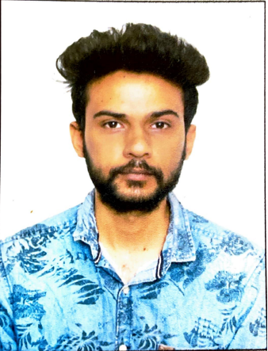

Shivang Dutta - Senior Software Engineer

Work History
-
Senior Software Engineer(Feb 2024 - Current)
Puresoftware, Noida, India
- Developed and maintained .NET/C# class
libraries for casino game math engines.
- Implemented mathematical logic and features
using MVC patterns, processing JSON data for
game requirements.
- Created data APIs to provide accurate game
data to front-end platforms.
- Ensured compliance with RTP standards by testing
and validating mathematical models.
- Enhanced and integrated new features into
existing game architectures.
-
Game Developer(Aug 2022 - Feb 2024)
Ingenuity Gaming Pvt. Ltd.
- Developed the complete front end for an
in-house RTP and Game Simulation tool,
processing math data from JSON format for
simulation purposes.
- Collaborated closely with backend developers to
design and implement new features for the
simulation tool, which is built in native C#.NET.
- Worked with the Tech Lead to decompose
project goals into actionable tasks and
responsibilities.
- Mentored junior developers on office and departmental procedures, conducted
knowledge transfer sessions, and administered
tests to assess understanding.
- Primarily focused on front end development for
Slot and Bingo games.
-
Software Development Engineer(Unity)(Feb 2021 - Aug 2022)
JioTesseract
- Developed front-end applications for mixed
reality using JioGlass and Unity, optimizing
architecture for both 3DoF and 6DoF
experiences.
- Integrated with the Android layer, leveraging
native Android calls to retrieve data for
enhanced mixed reality applications.
- Worked on the in-house JioMixedReality SDK,
facilitating the creation of MR applications
specifically for JioGlass.
- Collaborated with the JioMixedReality SDK team
to refine the SDK for both internal and external
use.
- Consulted with engineering team members to
assess system loads and devise improvement
strategies.
-
Game Programmer(April 2019 - December 2020)
Gameshastra solutions Pvt. Ltd
- Collaborated with senior programmers and
designers to create an optimized architecture
based on design requirements.
- Developed various Unity editor tools, including
level generators for designers and JSON creation
tools for data management.
- Contributed significantly to a storytelling game by
developing the entire character customization
module and parts of the gameplay.
- Utilized Unity Addressables and Asset Bundles for
managing texture data and sprites.
- Gained experience in developing slots, casino
games, and Match 3 games during the early
career period.
- Completed localization for a hidden object
game, “Zapplin Time: The Roaring Twenties,” into
five European languages for GameHouse.
-
Trainee Game Engineer(Sept 2018 - December 2018)
YesGnome
- Developed a custom shader for a football game
to dynamically overlay player names and
numbers on textures.
- Implemented dynamic mesh deformation physics
for the goal net, enhancing the realism of
interactions in the game.